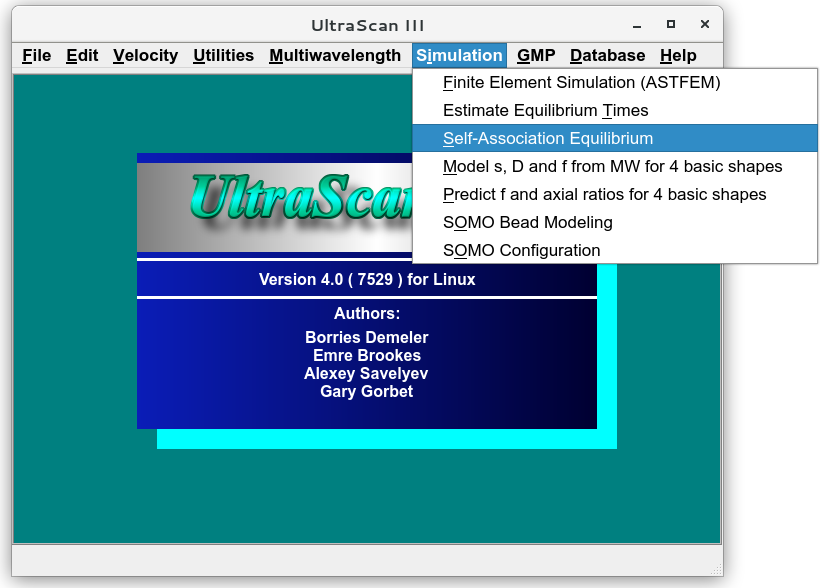
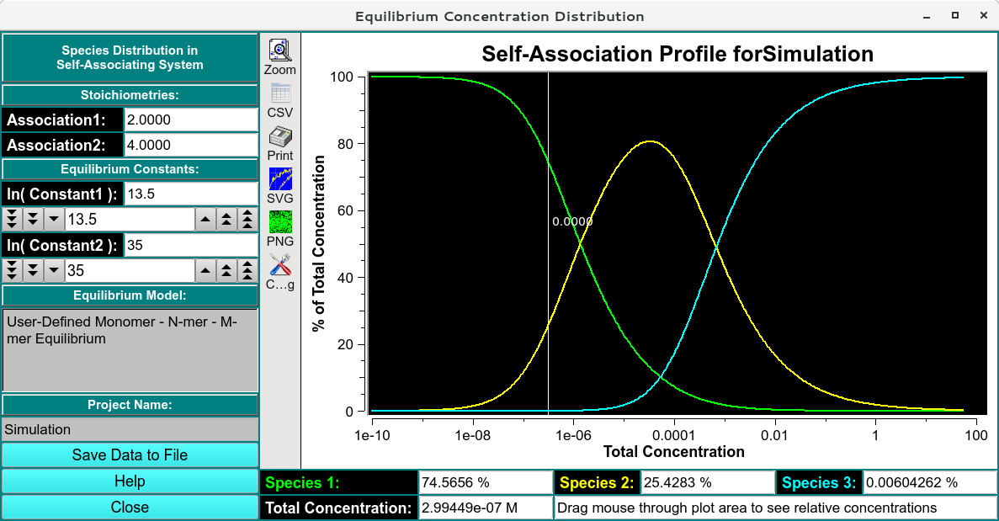

UltraScan Self-association Simulator:
This module is used to simulate binding isotherms for reversibly
self-associating systems with up to three species (monomer, N-mer,
M-mer). The program is started from the Simulation menu
(Self-Association Equilibrium):

Main Window:

Functions:
-
Association (1,2): Enter an integral value to specify the
stoichiometry of the association (e.g., 2, 3, 4...)
-
Equilibrium constants: Enter the natural log of the association
constants for each reaction.
-
Save Data to File: Export the currently displayed association
profile to a csv file.
-
Self-Association Profile for Simulation: Binding isotherms for
Monomer, N-mer and M-mer.
-
Species 1/2/3: Percentage of species' concentration with respect
to the total concentration, requires mouse click on the canvas to be
activated.
-
Total Concentration: Total concentration of the reacting
molecule.
-
Help Display this and other documentation.
-
Close Close all windows and exit.
 Manual
Manual